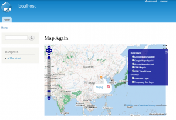
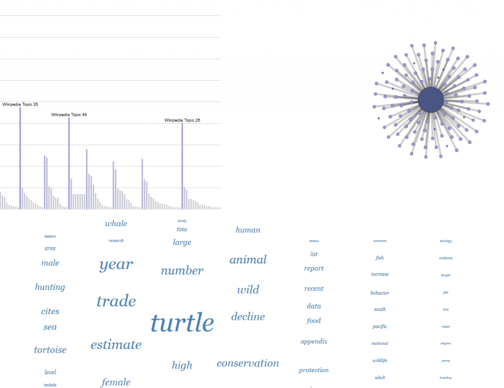

I never wanted to be a webmaster and always thought the term was hokey. I started developing in Flash because of its emphasis on vector graphics rather than its web portability and avoided Javascript because every time I looked into it I saw html tags and thought I was back in 1999. The same went for Drupal, which I played with for a couple weeks when I first got to Stanford and then dropped in favor of the much less fussy WordPress for this site. Fortunately for me, though unfortunately for my developing sense of disdain for both technologies, Stanford has a particularly strong representation of people producing sophisticated javascript libraries and possessing Drupal know-how that is simply too tempting to pass up.



OpenLayers and Geofield Module in Drupal 7
So after sitting down with Highwire Press’s geospatial Drupal guru Patrick Hayes, who walked me through the structure and benefits of spatial data in a CMS that could handle collaboration and security, I walked 90 feet from my desk to meet with Academic Technology Specialist and Drupal evangelist Zach Chandler who, in about thirty minutes, walked me through a clean Drupal 7 install, including all the modules I’d need to process and present spatial data.
After a few hiccups, including an upgrade to the developer release of the OpenLayers module, I can now provide a faculty member with a peer-collaborative environment that satisfies most of the representative and analytic needs of a scholar interested in dealing with spatial data. While Google Maps and Fusion Tables provide much of the low-level spatial tools that many scholars require, and ArcGIS provides the high-end functionality for analysis and representation of large, complex and GIS-oriented datasets, the middle ground between those two solutions was, in my mind, always a custom application (though one that could, hopefully, rely on reusable data services and APIs). That solution became far less of a solution if the scholar in question wanted to integrate with existing security and collaborative structures in place here at Stanford. The fact that I’m a fair hand with PHP and MySQL also means that I may actually be able to give back to the Drupal community both here at Stanford, and elsewhere.


Representing and exploring topic model output using Protovis
Likewise, I’ve avoided javascript and favored Flash’s actionscript for quite some time, motivated by the argument that regardless of one’s feelings about proprietary software, the pursuit of research goals was more important than the promotion of particular software ethics. While I’m very much in favor of free software and open source, that belief is trumped by the requirement that I build tools and visualizations that work while pushing large amounts of data. But while Flash Builder affords me a direct pipeline to developing Android apps, the anemic sales of Android tablets and Apple’s insistence on cutting the Flash runtime out of their machines required that I finally look into javascript for interactive web apps. Stanford’s own Protovis was used to produce the first iteration of a Topic Browser that allows one to move between a variety of statistical, network and text analytical views of topic modeling output. I didn’t quite time my jump into js as well as I did with Drupal, though, and might end up transitioning the final app into D3.
Of course, I’d much prefer it if there were simply a D3 module for Drupal–if any Drupal developers listening. Or maybe that’s me now.